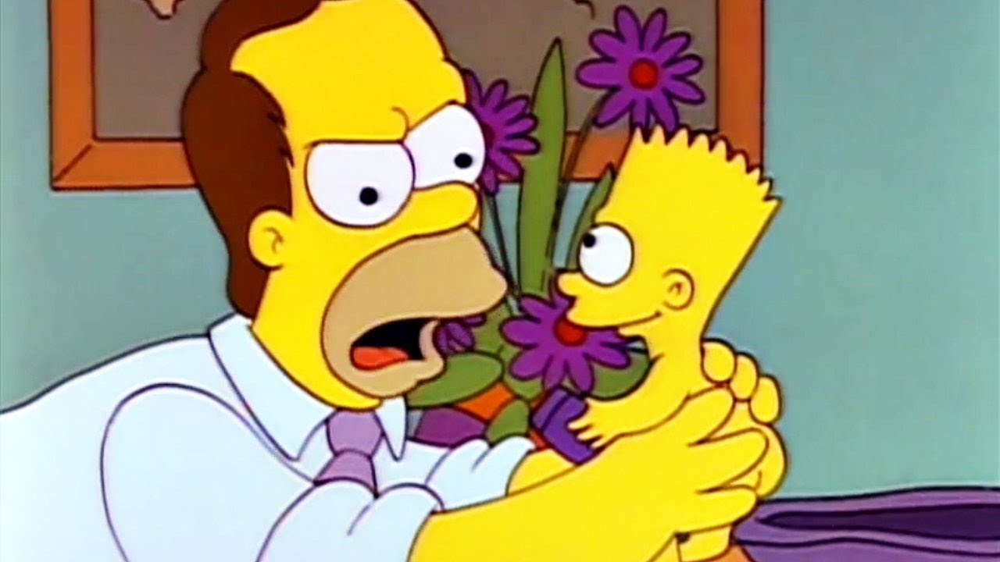
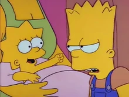
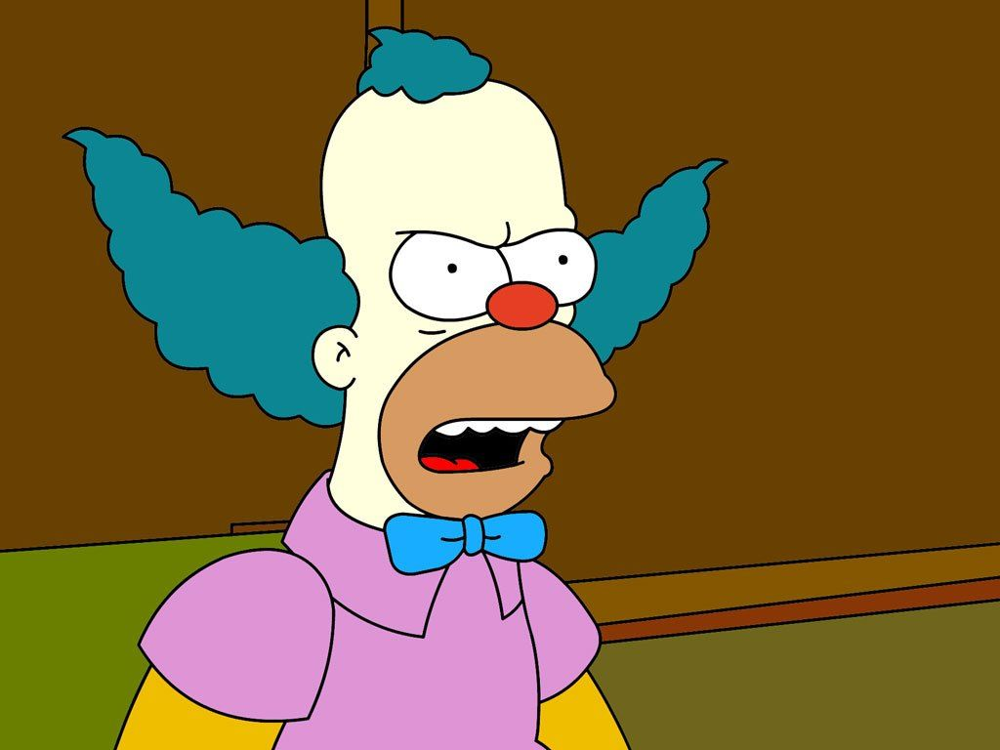
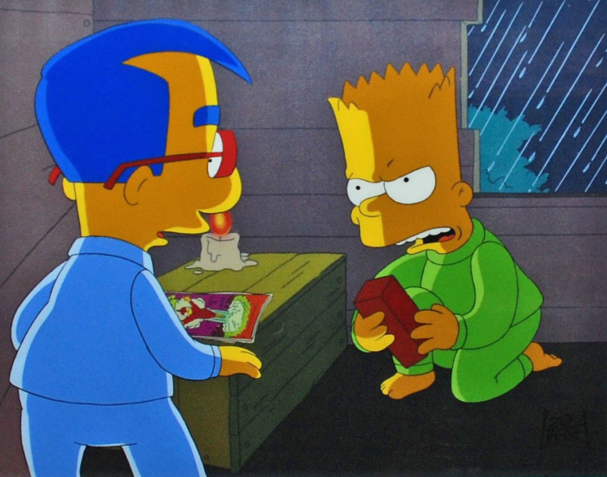

Bart was born on February 23 where he lit Homer's tie-on fire after ten minutes of being born. His birth date explains his prankster-like behavior. Bart is a self-proclaimed underachiever and prankster who is constantly in detention who in addition to his behavior is easily distracted. His penchant for shocking people began before he was born, Bart "mooned" Dr. Hibbert while he performed a sonogram on Marge when she was pregnant with him, and moments after being born, he set Homer's tie-on fire (Marge saying that he could not have done it on purpose because he was only ten minutes old). Bart's first words were "Ay Caramba" after he walked in on Homer and Marge at a bad time.
When Lisa was born, Bart got jealous of all the attention Lisa was getting sick and tried to make himself the center of attention. Bart eventually couldn’t take it anymore and told Lisa he was running away. Then, Lisa said her first word: “Bart!” Bart heard Lisa and realized how much she loved him, and realized he had to stay.
Bart's interests include Krusty the Clown (he is "Krusty Buddy" number 16302), reading comic books (especially Radioactive Man), watching TV (especially The Krusty the Clown Show and The Itchy & Scratchy Show), terrorizing Lisa, playing video games, helping Lisa solve various problems (e.g. reuniting Krusty with his estranged Father), and pulling off various pranks, (such as mooning unsuspecting people, prank calling Moe at his tavern, and his patented spitting off an overpass). Bart also sprays graffiti under the alias 'El Barto', and regularly frequents the Kwik-E-Mart (for bubble gum and Squishees) and The Android's Dungeon. Yuma Hickman moved to Springfield when Marge was pregnant with Bart.
Bart hinted that his favorite movies are Jaws and the Star Wars trilogy. His best friend is Milhouse Van Houten.
